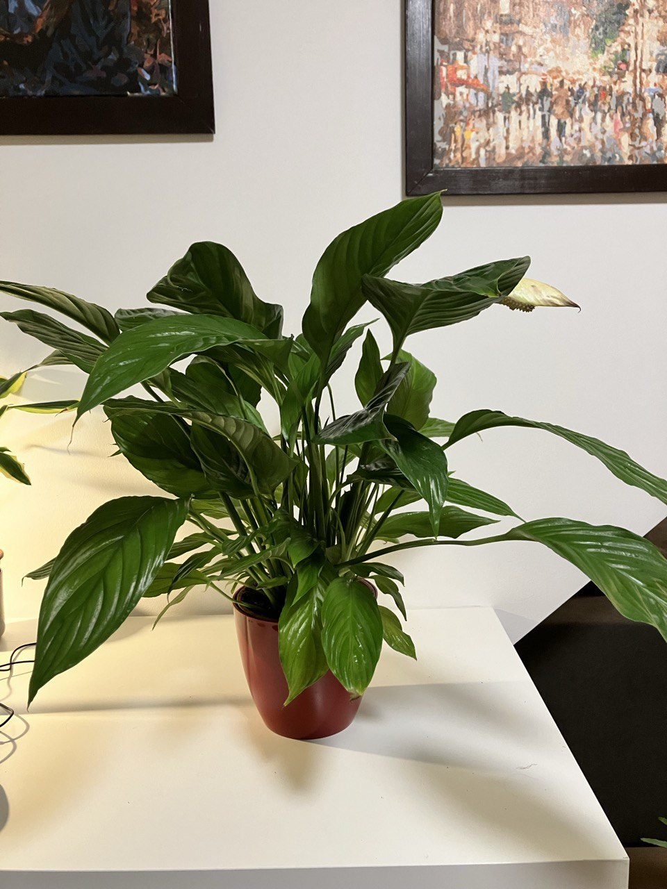

Activity
- Scheduled
- Feed 08-09-2024
- Repot 03-08-2025
Spathiphyllum Plant Care Guide
Environment
Light
- Indirect Light: Spathiphyllum, commonly known as Peace Lilies, prefer low to moderate light. Avoid direct sunlight as it can scorch the leaves.
Soil
- Well-Draining Soil: Use a high-quality, well-draining potting mix. Adding perlite or orchid bark can improve drainage.
Temperature
- Moderate Temperatures: Maintain indoor temperatures between 65-80°F (18-27°C). Protect the plant from drafts, cold temperatures, and sudden temperature changes.
Routine jobs
Watering
- Consistent Moisture: Keep the soil consistently moist but not waterlogged. Water when the top inch of soil feels dry. Drooping leaves can be a sign that the plant needs water.
- Humidity: Peace Lilies thrive in high humidity. Misting the leaves or placing the pot on a tray of wet pebbles can help maintain the humidity level.
Feeding
- Fertilization: Feed Peace Lilies every 6-8 weeks during the growing season (spring and summer) with a balanced, water-soluble fertilizer diluted to half strength.
Potting
- Repotting: Repot every 1-2 years in the spring. Choose a pot that is 1-2 inches larger in diameter than the current pot. Ensure the new pot has drainage holes.
Troubleshooting
- Common Pests: Watch for pests like spider mites, mealybugs, and aphids. Treat infestations with insecticidal soap or neem oil.
- Leaf Care: Wipe the leaves with a damp cloth to remove dust and prevent spider mites. Remove any yellow or brown leaves to maintain plant health.
Flowering
- Blooms: Peace Lilies produce white, hooded flowers that can last for several weeks. Removing spent blooms will encourage new flowers to form.